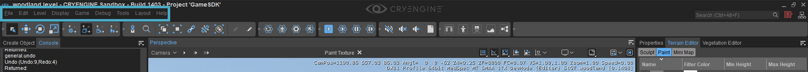
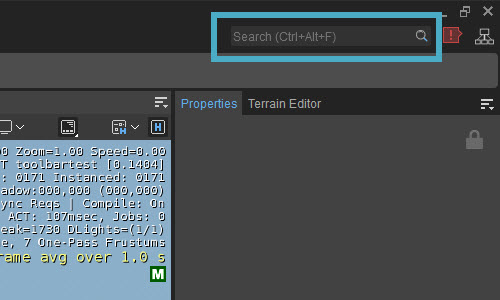
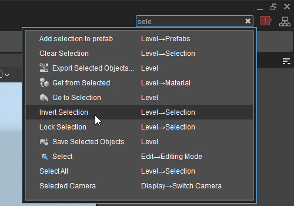

Overview
The main menu is where you can access everything from basic file operations and display options, to more advanced features such as terrain and level editing tools and AI settings.

Some of these commands can also be executed in the ToolBar or by using keyboard shortcuts.
The File Menu
The File menu includes commands related to the handling of files such as open and save level file, show log file, and a list of recently loaded levels.
Menu Item | Description |
|---|---|
New | Creates a new level. |
Open... | Opens an existing level. |
Save | Saves the level. |
Save As... | Saves the level under a different name. |
Quick Asset Browser | Opens the Assets Browser which lets you to search for anything within your project, and also lets you import assets without having to use separate importer tools. |
Export to Engine | Exports the level. |
Export Occlusion Mesh | Generates and exports a level Occlusion Mesh for a flagged object. The file will be saved as *.ocm file. |
Export SVOGI Data | Exports the SVOGI data, so voxelization is performed offline. This saves CPU time, memory usage and initialization time at run-time. While high-spec platforms will probably be able to do this at run-time, mid spec platforms may benefit from moving these tasks offline. To export succesfully, the CVar e_StreamCgf should be set to 0. Changing this setting should be done either before loading your level, or can alternately be manually changed in the system.cfg file. To make the engine use the exported files in your game, go to Level Editor -> Level Settings and activate the Stream Voxels option under Total Illumination V2. Note that the exported files will not be used while you're editing your game. Only when you play your game through the GameLauncher.exe (or whatever you rename it to in your game) will the engine stream the voxel data from the harddisk. |
Recent Files | Lists recently opened levels. |
Exit | Closes the Editor, prompting the user to save before exiting, |
The Edit Menu
The Edit menu contains commands related to object manipulation and selection.
Menu Item | Description |
|---|---|
Undo | Undoes the users last action (Ctrl+Z). |
Redo | Redoes the users last action (Ctrl+Y). |
Undo History | Opens a history of all changes you've made and lets you go back and forth through them. |
Delete | Deletes the selected object(s), when you press the Yes button on the |
| Rename | Renames the selected Engine element. |
Duplicate | Duplicates the selected object (Ctrl+D). |
Copy | Copies the item you have selected to the clipboard. |
Cut | Cuts the item you have selected. |
Paste | Pastes the item you have previously copied or cut. |
Find | Opens a new Level Explorer window that is set up to search for objects. |
Align/Snap | Align an object to the grid or to another object. Will move the pivot point and rotation parameters of the object currently selected to the one that you click on after you press the align to button. Also contains all the snapping options that are available as buttons in the top-right of the Viewport. |
Editing Mode | Select the various object editing modes. |
Constrain | Limits the movement to the X, Y, Z, or XY axes, to the surface of the terrain, or to the surface of the terrain and objects. |
Fast Rotate | Quickly rotates the currently selected object on the selected axis with the degree value specified in the Rotate Angles settings. |
Coordinates | Changes the Coordinate System. For more information on Coordinate Systems, click here. |
Keyboard Shortcuts | Opens a window with all shortcuts that set up in the Editor. |
Preferences | Editor Preferences can be set here. |
The Level Menu
Menu Item | Description |
|---|---|
Save Selected Objects | Saves selected objects as a group including their positions. |
Load Selected Objects | Loads the objects you have previously saved and place them in the same location in the level as before. |
Link | Linking is used to create hierarchies between objects. If you have one object (child) linked to another and then move the parent object, the child object will move the same way. To link one object to another you have to select one entity, then use the link feature and then clicking on another entity to link them together. |
Group | When having multiple objects selected the grouping function will group them together and draw a green box around them. |
Prefabs |
|
Selection |
|
Material |
|
Lighting | Lets you regenerate all the cubemaps in a level when you select Regenerate All Cubemaps option. |
Physics |
|
Go to Position | Moves the camera to a specified location (useful for sharing the view between different users for debugging for example). |
Go to Selection | Moves the camera to the selected object. |
Ruler | Activates the Ruler tool which can be used to measure distances. |
Save Level Resources | Exports all loaded resources to the specified directory. |
Export Selected Objects | Exports selected objects in *.obj file format that can be read by any DCC application. |
The Display Menu
The Display menu enables the user to toggle display features which will aid in level design, entity placement and object manipulation.
Other commands such as Remember/Goto Location and viewport navigation speed, can also be accessed from the Display menu.
Allows you to hide all helper objects or turn them back on (Shift+Space).
Menu Item | Description |
|---|---|
Wireframe/Solid Mode | Enables the Wireframe rendering mode (F2) and turns on the single mode rendering. |
Graphics |
|
Display Info |
|
Location |
|
Switch Camera |
|
Camera Speed Height-Relative | When enabled, adjusts the speed of camera movement based on the height of the camera above terrain or objects. The camera speed is multiplied by the height in meters (clamped to a range of 1-1000). This lets you to precisely move when being closer to the ground, or quickly to different parts of the level, without constantly adjusting the camera speed slider. |
Camera Terrain Collisions | Determines whether the camera will collide with the terrain or move through it when moving around in the Viewport (default = off). |
Camera Object Collisions | Toggles object collision on and off. When turned on, the camera does not go through objects on the terrain when hitting them, but will always move along them. |
| Full Screen (Ctrl+Space) | Switches between the windowed mode and the full screen mode. |
The Game Menu
The Game menu provides commands to enable Game Mode and test newly created AI/physics features.
Menu Item | Description | ||||||||||||||||||||||||||
|---|---|---|---|---|---|---|---|---|---|---|---|---|---|---|---|---|---|---|---|---|---|---|---|---|---|---|---|
Game Mode | Switches to Game Mode so that you can play the level within the editor (Ctrl+G). Press Esc to exit game mode. | ||||||||||||||||||||||||||
Suspend Game Input | Switches to Sandbox control mode while still running the game in the Viewport. This allows users to adjust properties in the Editor while the game is still running. To enter Game Mode again, click on the Viewport or use the tilde key (~). | ||||||||||||||||||||||||||
Enable Physics/AI | Enables Physics and AI in Edit mode so that users don't need to jump in-game to see how they behave (Ctrl+P). | ||||||||||||||||||||||||||
Audio |
| ||||||||||||||||||||||||||
AI |
Please refer to the Navigation (MNM) documentation for more information on Navigation Areas, NavMeshes and Agent Types. | ||||||||||||||||||||||||||
Synchronize Player | Sets the player to the position where the current editing camera is. This can be used to prevent the camera triggering logic such as AreaTriggers while in Editing mode. |
The Debug Menu
This menu contains a great number of debugging options.
Menu Item | Description |
|---|---|
| Reload Scripts | Provides functions to reload specific (or all) game scripts. |
| Reload Texture/Shaders | Reloads all textures and shaders used in the level. |
| Reload Geometry | Reloads geometries used in the level. |
| Reload Terrain | Initiates the Terrain (can be used instead of reloading the Editor). |
| Check Level for Errors | Checks the level for errors (duplicate objects, missing assets) and displays a list in the console. |
| Check Object Positions | Searches for objects that are contained within other objects in the scene. |
| Resolve Missing Objects/Materials | Will run a check through the level and try to resolve all objects/materials that have problems. |
| Save Level Statistics | Saves level statistics to the "YOURLEVELNAME.xml" file in the folder: |
| Advanced |
|
| Show Log File | Opens an editor.log file. |
The Tools Menu
This menu contains all the different tools that exist within the CRYENGINE Sandbox Editor. These tools have their own pages explaining what they do, which you can find here.
Menu Item | Description |
|---|---|
Level Editor |
|
Viewport | Lets you open different Viewports. |
Asset Browser | Opens the Asset Browser. |
Audio Controls Editor | Opens the Audio Controls Editor tool. |
DataBase View | Opens the Database View tool. |
Dependency Graph | Opens the Dependency Graph. |
Dialog Editor | Opens the Dialog Editor tool. |
Dynamic Response System | Opens the Dynamic Response System tool. |
Environment Editor | Opens the Environment Editor tool. |
Flow Graph | Opens the Flow Graph tool. |
Lens Flare Editor | Opens the Lens Flare Editor tool. |
LOD Generator | Opens the LOD Generator. |
Material Editor | Opens the Material Editor tool. |
Mesh Importer | Opens the Mesh Importer tool. |
Particle Editor | Opens the Particle Editor tool. |
Schematyc Editor | Opens Schematyc tool. |
Terrain Editor | Opens the Terrain Editor tool. |
Track View | Opens the Track View tool. |
Vegetation Editor | Opens the Vegetation Editor tool. |
Advanced |
|
Animation |
|
Deprecated | Contains several deprecated tools that will be removed in the future and/or merged into other tools. |
Designer Tool |
|
FBX Import | Opens the FBX Importer tool that loads animations, skeletons, skins and static geometry meshes. |
Substance |
|
Universal Query System |
|
The Layout Menu
With this menu, you can save and load several Editor layouts.
Menu Item | Description |
|---|---|
Save Layout As... | Saves the Editor layout under a different name. |
Load Layout | Lets you load a previously saved layout. |
Reset Layout | Resets the Editor layout tot the default settings. |
The Help Menu
The Help Menu contains version information as well as access to the Tip of the Day dialog box.
Menu Item | Description |
|---|---|
Go to Documentation | Opens the http://docs.cryengine.com website in your default browser. |
Console Commands | Opens a list of Console commands. |
Console Variables | Opens a list of CVars. |
About Sandbox | Displays CryENGINE Sandbox Editor version information. |
Menu Search
To make it easier for users to find the tool or action that they're looking for, there is a Menu Search option in the top-right corner of the interface:

This search bar lets you look for anything that is located within the Menu Bar and shows you where it is. It works the same way as other search bars in the engine; simply type part of the tool or action you're looking for and it will filter out anything in the Menu Bar with the text that you typed.
Say that you're looking for something with "selection". You type in part of the word and all the menu options with that text in it will be displayed:

When you've found the menu option you're looking for, you can either click on it, or navigate through the list with the Up and Down arrows on your keyboard and press Enter, to execute it.